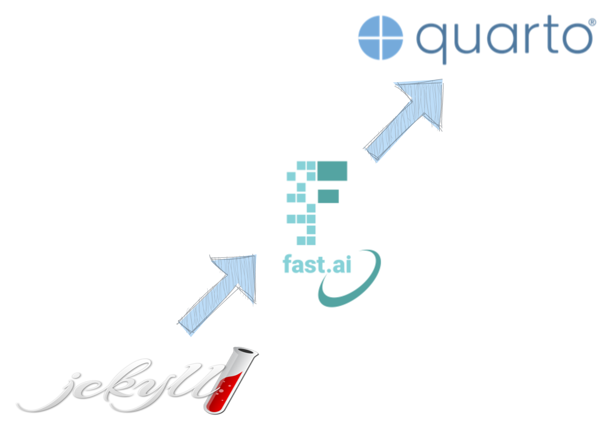

Home
Posts
Tutorials
Book Reviews
About
Categories
All
(14)
MLops
(1)
R programming
(3)
Windows
(1)
automation
(1)
bat files
(1)
blog
(6)
blogging
(2)
book review
(5)
business
(5)
business model
(1)
consulting
(1)
credibility
(1)
css
(1)
data science
(4)
excalidraw
(1)
experience
(1)
experimentation
(1)
fastpages
(1)
getting started
(2)
goal setting
(1)
imbalanced classification
(2)
julia language
(1)
jupyter
(1)
leadership
(1)
management
(1)
metrics
(2)
minimal viable product (MVP)
(1)
missing data
(1)
model deployment
(1)
non-fiction
(5)
notebooks
(1)
people
(1)
product management
(3)
professional development
(5)
quarto
(2)
school
(1)
startup
(1)
strategy
(2)
success
(1)
tutorial
(3)
vs code
(1)
Recent Posts
Building Credibility: The Key to Success
6 min
how to shape your credibility in a changing age
Mar 3, 2023
Customizing Your Quarto Website
10 min
a blog journey
Feb 25, 2023

Migrating from Fastpages to Quarto
5 min
a blog journey
Feb 17, 2023
How are machine learning models deployed?
5 min
a high-level overview
Jun 12, 2022
Getting Started with Julia in VS Code
2 min
A quick blog detailing how I created my first julia project.
May 30, 2021
Taking a .bat to scripts
1 min
How to use a .bat file to run files on Windows.
Dec 15, 2018
No matching items
See all
Recent Tutorials
Missing Data Modeled
16 min
By creating a missing data model, you can understand the underlying data assumptions critical to your data science model.
Jul 15, 2018
Vanilla vs SMOTE Flavored Imbalanced Classification
40 min
A companion notebook to Imbalanced Classification with mlr, here we compare non-SMOTE and SMOTE modeling using logistic regression, decision trees, and randomForest.
May 16, 2018
Imbalanced Classification with mlr
17 min
This notebook is a tutorial on using
mlr
to solve an imbalanced data problem: predicting employee attrition.
May 15, 2018
No matching items
See all
Recent Book Reviews
Review of Working Backwards
3 min
Feb 21, 2023
Review of Flawless Consulting
1 min
Jan 12, 2023
Review of The Hard Thing About Hard Things
2 min
Jul 24, 2022
Review of Swipe to Unlock
2 min
May 3, 2022
Review of The Lean Startup
2 min
Feb 15, 2022
No matching items
See all